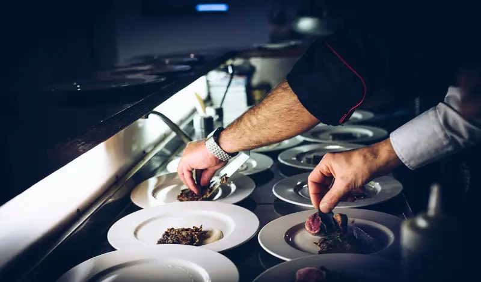
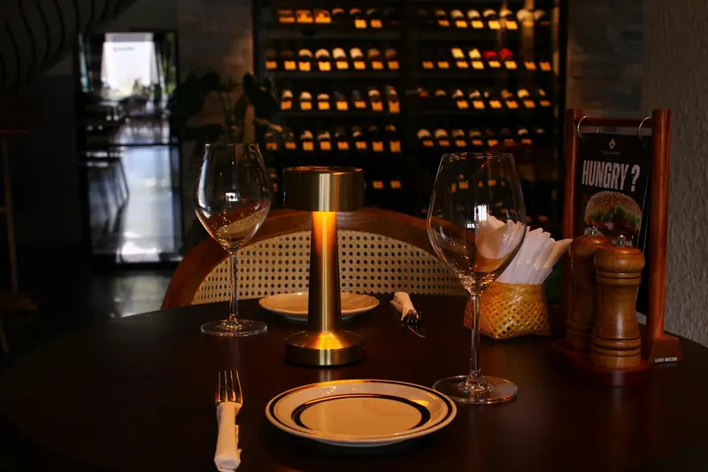
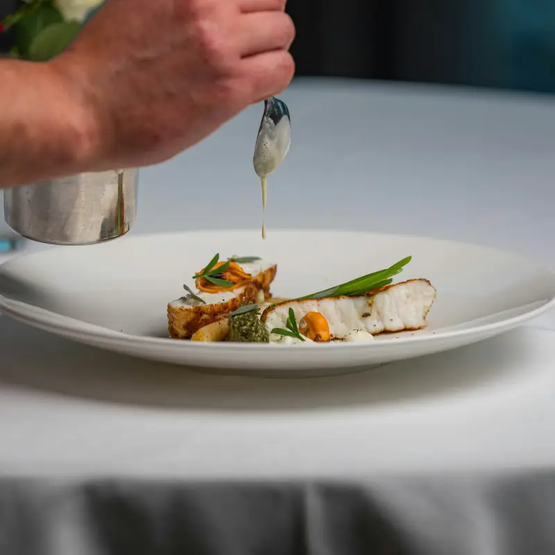

La carte
La carte change avec les saisons et les arrivages. Demandez aussi la suggestion du jour.
Entrées
Plats
Desserts
Le midi en semaine
Liste des allergènes disponible sur demande. Prix nets, service compris.


